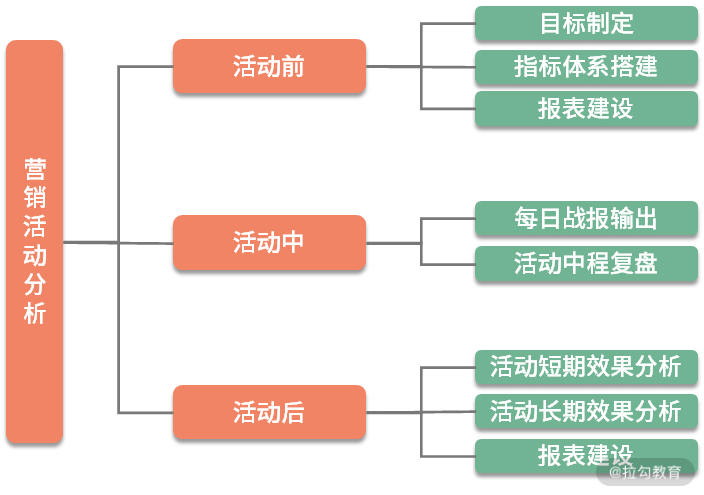
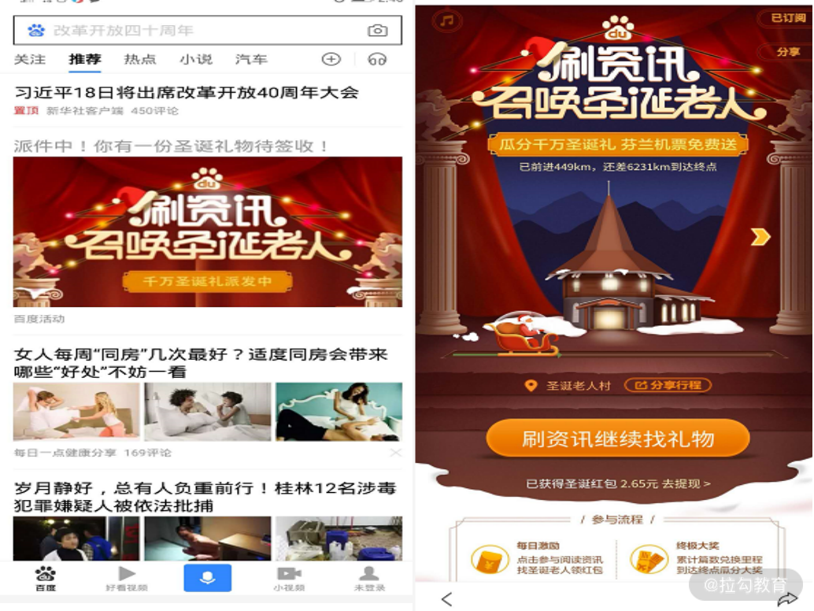
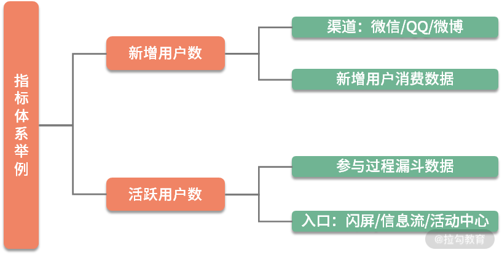
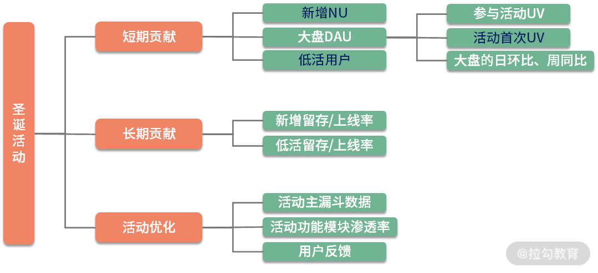

以下内容整理自拉勾教育《数据分析思维与实战 23 讲—— 14 | 营销活动：日常运营活动的分析模板》
营销活动当前现状
公司做线上和线下活动时每天都会看到各种活动捷报。活动结束后，钱是花完了，真实用户数却没涨多少，大多数都被薅羊毛了。营销活动每年都会花很多钱，因此必须要找一个公正的第三方——数据分析师，来做这件事。而数据分析师既然要做，就一定要发挥出自己的专业性，大家都是罗列数字，为何你就是不一样，你的强大逻辑性在哪？
在这种背景下，我们看一下营销活动的运营人员现状。运营人员比较关注活动的三个维度：带来多少用户量的增长，拉来多少新增用户，外界传播量能覆盖多少人。而数据分析师只需在活动期间每天进行效果播报，活动后 1~2 周内产出活动报告即可。活动报告包括活动参与人数、拉新数、用户画像三部分内容。
数据分析师与营销活动运营人员相比，数据分析师的优势在于快和维度拆解性，劣势在于细节性。因为数据分析师在做分析时，只是开一个大树，在很多具体业务的细节上面，毕竟不是专门做营销活动出身，所以不是特别了解，也可能没去问，导致最后报告结论的解读可能多多少少有些问题。而对于营销活动人员来说，每过一段时间，就要搞各种活动，所以很清楚活动细节。
其实营销活动应该是一件长期的事件，不可能通过某一次活动就能够带来大量的用户增长，因此数据分析师在做这件事时，要保持以下特性。
分析的连贯性：在活动前、活动中、活动后都要进行分析。
分析的对比性：不要单看活动本身，活动要与活动之间对比，这样才能更好分析什么样的活动更适合产品本身。
分析的公正性：该怎么样就怎么样，拉新、促活、品牌的评判都应该有一套商定好的标准。
营销活动分析无非就两件事：活动效果评估（本活动和活动对比）和活动优化建议。活动之后要对活动进行复盘，那些做得不好，之后可以避免。
营销活动具体分析
我们来看营销活动具体应该怎么分析？首先要理一理，实际上在做任何活动之前，活动运营方都花了很多心思。活动之前必然会出文案，找开发，然后跟外面的合作方进行研讨，所有的这一切都会发生得很早。因此分析师要想做好活动分析，在这个时候就要与活动运营方多沟通，知道活动整体是怎么回事。
比如，第一要了解是谁来开发，靠不靠谱？第二要知道活动形式及测试体验，文案可能存在哪些问题。第三要想好活动大概有哪些指标。这些都要提前想一想。
活动前好好准备——前 1~2 周
在活动前，要好好准备这几件事。
活动前和运营方商定本次活动的目标。一定要有目标，没有目标的运营不是一个好运营，没有目标的运营绝对不会使出 100% 的力气。这里能很好地培养你业务的敏感性。
活动前和研发沟通好埋点。不是每个研发都很靠谱，即使很靠谱也可能会犯错误。在埋点这件事上，分析师应该是主导地位，包括字段名、埋点位置、上报方式等。
提前搭建好指标体系和报表。一定要提前准备，活动前 1 天才发现问题，这样的情况太常见。
定好输出格式。要想好活动中、活动后每天输出哪些数据，什么形式展现，这些要与业务绑好。
正式活动前一定要好好地准备，对于一般中型的活动一般是提前 1～2 周。如果是大公司的活动，可能前一个月就要好好准备。像双 11 这种特大活动就不是前一个月才准备，可能在活动的前三个月，所有的数据分析师都在准备这件事了。
活动中好好观察——期间每一天，包括预热
其实正式活动，都有预热期，比如双 11 活动是 11 月 11 日，但 11 月 1 日起就已经很热闹了，甚至更早。所以在活动中，应注意以下事项。
观察第 1 天的数据，这个非常关键。详细看指标体系的报表数据，查看是否有异常。因为前期修改成本非常小，对于负责人的研发也很乐意去解决这件事。
观察 1~3 天数据，预估活动目标的完成度，活动目标在前期一定是确定好的，这里要看是否要做适当调整。
定时输出活动战报，每天早上输出，让所有人都知道情况。实际上管理层都有一个比较好的心法，就是早上看数据，你不要以为他在群里面没回，实际上都会看。在工作中真实情况可能真的只有运营人员自己知道数据，有一些数据很可能还藏着掖着。这里的数据要注意真实性，该怎么样就怎么样，要敢于暴露问题，这里问题不会很大，因为所有人的目标就是希望把这个活动做好。
活动 1 周后数据复盘，1 周后进行一次详细复盘，并同步给管理层，让更高视野的人来给建议。
活动后好好复盘——公正性
到活动后期，需要好好复盘，其中最关键的是公正性，比如以下几点。
复盘活动对大盘的影响，这件事实际上很难做，但也有解决方法，后续会讲到。
复盘活动的短期效果，目标完成度，参与人数、拉新、品牌传播指数。
复盘活动的长期效果，通过活动带来的长期用户数，而不是低价值用户数。
复盘活动存在的问题，包括产品设计和用户反馈。
前面三点都是说活动的一个效果，第四点是说活动要为下一次活动做一些优化，包括以后做一些类似的活动，我们也要避免同样错误的发生。这里面就包括产品设计，用户是不是反馈这个 Bug 太多？明明中奖了，最后还是没有奖品，等等。这些问题都要把它暴露出来，所有的这一切都尽量要在活动后 1~2 周之内输出，在这件事上要非常讲究实效性。
营销活动分析分为三部分内容，总结如下图所示。

第一次活动分享，数据分析师帮助运营人员做好并形成模板，后续让运营负责即可。活动是个非常个性化的活儿，分析师不应该投入太多时间。
案例讲解——百度 APP
活动介绍
最后我举个百度 APP 的活动案例，我们先看一下百度 APP 里面的活动，随便刷一下 feeds 流，发现有一个圣诞活动，点进去后发现是这样一个交互界面，如下图所示。

这个活动主要是中间这个按钮——“刷资讯继续找礼物”。你点击按钮后就会跳到另一个 feeds 流里面，然后用户点击某一天资讯之后，它可能就给你两三毛钱。观察活动界面基本情况如下。
拉新：右上角分享。
促活：刷资讯找礼物。
活动奖励：送现金+机票。
体验感受：功能非常简单，但文案写的太复杂。
活动日期：12月6日 - 12月25日。
活动指标体系搭建
由于活动的步骤较多，这里我就挑选一些比较关键的活动指标，来完成活动指标体系的搭建。前面课时有提到，在搭建活动指标体系的时候，不追求大而全，找到关键指标，然后按照用户的基础属性和行为属性拆解即可。
对于这个活动，它的关键指标，就是带来新增用户和活动参与用户，那么我们就针对这两个点，对新增用户数和活跃用户数进行拆解。拆解途径如下图所示。

新增用户数可以拆解为渠道和新增用户的消费数据两个维度。渠道指用户是通过哪个渠道进入活动页面，比如是通过微信、QQ、微博或其他渠道进入活动。假设这里我们就只看这两个维度，当然真实情况中肯定要看更多维度的详细数据，我们先暂且不说。
对于活跃用户数也可以拆分为两个维度，第一个维度是参与过程的漏斗数据，这个很关键，因为漏斗分析非常经典，就是老用户进入这个活动之后，他整个参与过程的一个漏斗数据怎么样。第二个维度是在入口这一块，分为闪屏、信息流、活动中心，要知道我们的活跃用户到底是通过哪个入口进来的，每个入口的漏斗数据如何。
这就完成了活动指标体系的搭建，当然你拆解的真实情况肯定比这个要复杂，不仅仅是这几块，一定要到具体案例里面去思考。同时一定要提前建好所有报表，然后跑测试数据，正常都会有测试数据，一定要让研发去给一些测试样本，活动之前一定要确认测试数据没有问题。
活动后复盘—绝不是简单的数字罗列
活动后的复盘我来详细说一下，活动复盘绝对不是简单的数字罗列，总结如下图所示。

圣诞活动复盘我们分为三部分，第一个是短期贡献，第二个是长期贡献，第三个是活动优化。
短期贡献
新增 NU： 我们看新增用户数 NU、大盘 DAU 的波动对大盘的影响。
大盘 DAU： 对于大盘 DAU ，因为有诸多的变量，所以活动对于大盘的影响很难评估。这里面我给出几个点。
第一是参与活动 UV，有多少人参加了这个活动。
第二是活动首次 UV，有多少用户是首次打开 APP 就进入了你这个活动，那这些用户绝对是你这个活动带来的，没有争议。
第三就是大盘的日环比以及周同比，因为大盘的日环比可以看出大盘本身的波动情况，周同比能评估对大盘的一个影响。
低活用户： 低活用户代表你通过这个活动把多少低活跃的用户拉成高活跃用户，这个就很关键。比如说把一些沉默用户、消费频次非常低的用户拉起来了，这就很有价值。
长期贡献
新增留存/上线率： 指我们带来的新增用户，后期的留存以及上线率如何。这里一般看七天，因为你不能计算太长时间，所以活动结束后，新增用户的 7 日留存是多少。
低活留存/上线率： 指低活用户的留存以及上线率是多少，在长期贡献没有一套固定的评判标准，所有的标准就是按照你自己对业务的理解以及你正确的逻辑性。
活动优化
活动主漏斗数据： 活动一层一层漏斗的数据怎么样？
活动功能模块渗透率： 活动各个功能模块低渗透率怎么样？
用户反馈： 用户反馈是为后面活动做准备，收集整理复盘，避免踩坑即可。
活动后复盘—总结
这就是活动后的整体复盘，我们看了一下短期贡献、长期贡献以及活动优化。下面我整体总结下活动的整体复盘，其中我也会补充一些其他点，如下所述。
如果活动涉及收入和品牌传播（百度指数、微博指数），也要加入复盘；
可以用同比、环比来衡量对大盘 DAU 的贡献，同一拨用户前后对比其实不太好说明问题；
新增、首次、低活带动这三个指标，可以较好评判活动的价值；
对于拉来的新增用户和低活用户，更重要的是这部分用户的后续留存；
一定要把活动与活动间的数据进行对比，这更能说明问题，哪个活动好不好一目了然；
一定要思考每次活动的本质和意义，比如某个活动本身就不针对拉新，然后新用户参与了，你能说是你带来的吗？肯定不能；
如果是公司 S（最高）级的活动，数据分析师要看实时数据，无论是资源还是精力，都要重点投入；
一定要敢于暴露问题，数据分析师把已知的事实告知自己的上级，并邮件同步给活动运营的负责人；
凡是涉及活动使用金额时，分析师最好不要自己出数，让业务方给，工作中一定要自己做的话，记得邮件同步说明情况。